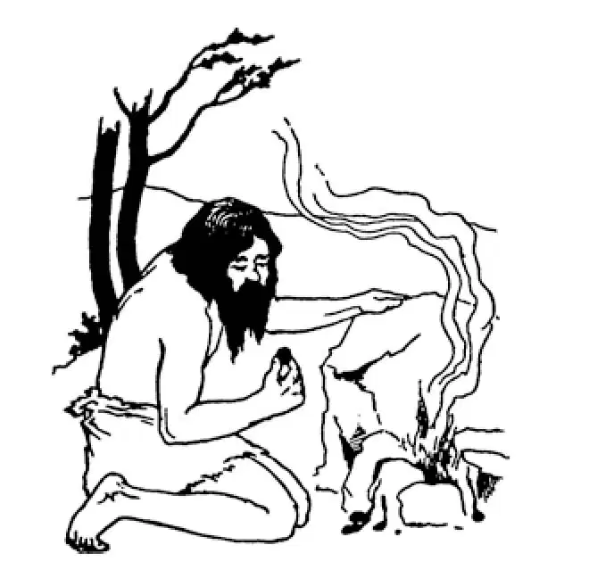

03
Fire! Fire!! Fire!!!
火！火！火！

THE first things are usually the most interesting——the first baby, the first tooth, the first step, the first word, the first spanking. This book will be chiefly the story of first things; those that came second or third or fourth or fifth you can read about and study later.
Primitive people did not at first know what fire was. They had no matches nor any way of making a light or a fire. They had no light at night. They had no fire to warm themselves by. They had no fire with which to cook their food. Somewhere and sometime, we do not know exactly when or how, they found out how to make and use fire.
If you rub your hands together rapidly, they become warm. Try it. If you rub them together still more rapidly, they become hot. If you rub two sticks together rapidly, they become warm. If you rub them together still more rapidly, they become hot. If you rub two sticks together very, very, very rapidly, they become hot and at last, if you keep it up long enough and fast enough, are set on fire. Native Americans and Boy Scouts and Girl Scouts do this and make a fire by twisting one stick against another.
This was one of the first inventions, and this invention was as remarkable for them at that time as the invention of electric light in our own times.
People of the Stone Age had hair and beards that were never cut, because they had nothing to cut them with, even had they wanted them short, which they probably didn't.
They had no clothes made of cloth, for they had no cloth and nothing with which to cut and sew cloth if they had.
They had no saws to cut boards, no hammer or nails to fasten them together to make houses or furniture.
They had no forks nor spoons; no pots nor pans; no buckets nor shovels; no needles nor pins.
The people of the Stone Age had never seen or heard of such a thing as iron or steel or tin or brass or anything made of these metals. For thousands and thousands of years primitive people got along without any of the things that are made of metal.
Then one day a Stone Age man found out something by accident; a discovery we call it.
He was making a fire; and a fire, which is to us such a common, everyday thing, was still to him very wonderful. Round his fire he placed some rocks to make a sort of campfire stove. Now, it happened that this particular rock was not ordinary rock but what we now call “ore,” for it had copper in it. The heat of the fire melted some of the copper out of the rock, and it ran out on the ground.
What were those bright, shining drops?
He examined them.
How pretty they were!
He heated some more of the same rock and got some more copper.
Thus was the first metal discovered.
At first people used the copper for beads and ornaments, for it was so bright and shiny. But they soon found out that copper could be pounded into sharp blades and points, which were much better than the stone knives and arrow-heads they had used before.
Notice that it was not iron they discovered first; it was copper.

A cave man discovering copper
发现铜的穴居人
We think people next discovered tin in somewhat the same way. Then, after that, they found out that tin when mixed with copper made a still harder and better metal than either alone. This metal, made of tin and copper together, we now call bronze; and for two or three thousand years people made their tools and weapons out of bronze. We call the time when men used bronze tools, and bronze weapons for hunting and fighting the Bronze Age.
At last somebody discovered iron, and soon people saw that iron was better for most useful things than either copper or bronze. The Iron Age lasted three thousand years.
People who lived in the Bronze and Iron Ages were able, after the discovery of metal, to do many things they could not possibly have done before with only stone.
You may have heard in your mythology or fairy tales of a Golden Age also, but by this is meant something quite different. The Golden Age means a time when everything was beautiful and lovely and everybody wise and good. There have been times in the world's history which have been called the Golden Age for this reason.
But I am afraid there never has been really a Golden Age—only in fairy tales.
【中文阅读】
最先发生的事情总是最有趣的——生第一个孩子，长第一颗牙，走第一步，说第一句话，挨第一次打，等等。这本书主要也是关于这些“第一”的故事，那些排在第二、第三、第四或第五的事情将来你会读到、学到。
原始人开始并不知道火是什么。他们没有火柴，也没有任何来照明或取火的方法。晚上他们没有灯，他们没有取暖用的火，也没有烧饭用的火。就在某个时间、某个地点，他们开始学会了如何生火和用火，但我们无法确切知道。
如果你快速地搓手，手就会暖和起来。试试看。如果你搓手再快点，手就会发烫。如果你快速地摩擦两根木棍，木棍就会发热。如果你摩擦再快一点，木棍就会发烫。如果你非常快、非常快、非常快地摩擦木棍，它们就会变得滚烫，如果你不断摩擦下去，越来越快，最终就会点燃木棍。美洲土著人和男、女童子军都是这样做的，他们转动一根木棍去摩擦另一根木棍来生火。
这是人类最初的发明之一。这项发明当时对他们来说就像我们这个时代发明电灯一样了不起。
石器时代的人从不剪头发、刮胡子，因为即使他们想把胡子、头发弄短，也没有工具，可能他们也没想这样做。
他们没有布做的衣服，因为他们没有布，即使有布，也没有剪裁、缝纫的工具。
他们没有锯木板的锯子，也没有斧头和钉子把木板钉在一起造房子、做家具。
他们没有叉子和勺子，没有壶和锅，没有桶和铲子，也没有编织针和别针。
石器时代的人从来没有看过、也没听说过钢、铁、锡、铜这些金属，或用这些金属做成的东西。原始人没有任何金属制品，就这样生活了千万年。
然后，有一天，一个石器时代的人偶然发现了什么，我们现在就称它为 “发现”。
他正在生火，火对我们来说再普通不过了，对他而言却仍然非常神奇。火的四周他放了一些石块，围起来有点像篝火炉。很偶然地，他挑来的石头刚好不是普通的石头，而是我们现在所说的“矿石”，因为它里面含有铜。火的高温熔化了石头里的铜，使它流淌到地上。
这些亮闪闪的一滴一滴的东西是什么？
他瞧来瞧去。
它们多好看啊!
他又把一些同样的石头放到火里加热，得到了更多的铜。
第一种金属就是这样被发现的。
开始时，人们把铜做成珠子和各种装饰物，因为它那么亮闪闪的，很好看。然而，他们很快就发现铜可以被敲打成锋利的刀片和箭头，比他们以前用的石制刀和箭头强多了。
我们认为，接下来人用某种同样的方式发现了锡。在那以后，他们发现锡和铜熔合而成的金属，比锡和铜本身更硬、更好。这种锡和铜的合金，我们现在称为青铜。两三千年以来，人们就是用青铜做出了工具和武器。我们把人类使用青铜工具和青铜武器狩猎、打仗的时代称为“青铜时代”。
最后，有人发现了铁，很快，人们就发现铁比铜或青铜更适合做成大多数实用的东西。铁器时代延续了三千年。
生活在青铜时代和铁器时代的人类，发现金属以后，他们能做很多事情，都是他们以前只有石头可用时不能做的。
你可能在神话或童话里也听到过“黄金时代”，但是它所表达的可是另一回事。黄金时代是指一切都很美好而可爱纯洁，人人都很智慧而善良的一个历史时期。世界历史上有过一些时期因为这个原因而被称为黄金时代。
不过，我却认为历史上这样一个“黄金时代”从未真正有过——恐怕只存在于神话中吧。